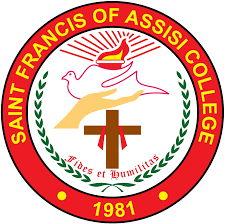

UNIVERSITY AND COLLAGES
Siquijor State College
Siquijor State College is the only state college in the island province of Siquijor, Central Visayas, Philippines. The province is situated 30 kilometres (19 mi) east of Negros Island, and 565 kilometres (351 mi) from Manila. The SSC main campus has a total land area of 3.9 hectares (9.6 acres) and is located at Old Capitol Circle in North Poblacion, Larena. It has one satellite campus located in the town of Lazi.
History
Siquijor State College was founded in 1920 by Lt. Governor Vicente Villanueva. It was then called as the Larena High School (LHS) that offered only the first and the second-year levels, one section per curriculum-year level with only two teachers including the principal and was under the supervision of the Negros Oriental Provincial High School (NOPHS) in Dumaguete.
Carmelite College
We prepare students to excel in an interconnected world. Carmelite College provides an enriched learning environment that has helped countless students get ahead. Founded in 2010, our institution is located in Siquijor Island and reflects the diverse backgrounds and cultures of the area. We’re extremely proud of our students, teachers and staff, who are always eager to learn, create and grow together. Give us a call to find out more about how we can help you prepare for the future.
History
Carmelite College is owned and managed by the Congregation of the Carmelite Sisters of Our Lady based at Fatima Village, Dumaguete City, Philippines. It all started in 2010 with an invitation from Fr. Ramon L. Duran (now Msgr. Ramon L. Duran, PC), the parish priest of St. Vincent Ferrer Parish of Larena, Siquijor, as inspired by the clergy and parishioners, for the Carmelite Sisters of Our Lady to finally serve the youth and provide Catholic education in the tertiary level in the island of Siquiijor.

Lazi National Agricultural School
Lazi National Agricultural School (LNAS) is an educational institution located in Lazi, Siquijor, Philippines. It primarily focuses on providing vocational education and training in the field of agriculture and related disciplines. The school aims to equip students with practical skills and knowledge in agricultural practices, crop production, animal husbandry, agricultural machinery operation, and other relevant areas.
History
CLazi National Agricultural School (LNAS) is an educational institution located in Lazi, Siquijor, Philippines. While specific details about its history may not be readily available, agricultural schools like LNAS in the Philippines often have backgrounds rooted in the country's agricultural development initiatives.
Holy Name University
Holy Name University (HNU) is a private Catholic university located in Tagbilaran City, Bohol, Philippines. Established in 1917, it is one of the oldest universities in the region. Originally founded as Holy Name Academy, it later gained university status and expanded its academic offerings. HNU offers a wide range of undergraduate and graduate programs in various fields including education, business, engineering, information technology, nursing, arts and sciences, and more. The university is committed to providing quality education grounded in the Catholic faith and the values of truth, excellence, and service.
History
Holy Name University (HNU) traces its origins back to 1917 when it was established as Holy Name Academy by the Belgian sisters of the Daughters of Charity. The academy started as a primary school for girls but eventually expanded its offerings to include secondary education. Over the years, Holy Name Academy grew in reputation and expanded its academic programs. In 1948, it became a college, offering tertiary-level education. The institution continued to evolve, adapting to the changing educational landscape and the needs of its community.

Saint Francis of Assisi College
Saint Francis of Assisi College (SFAC) is a private educational institution in the Philippines. Established in 1981, it offers a wide array of academic programs from preschool to tertiary levels. SFAC is committed to providing quality education grounded in Franciscan values, emphasizing holistic development and social responsibility. With multiple campuses across the Philippines, SFAC aims to prepare students for successful careers while fostering a spirit of compassion, humility, and service.
History
Saint Francis of Assisi College (SFAC) was founded in 1981 in Las Piñas City, Metro Manila, Philippines. Its establishment was spearheaded by Dr. Reynaldo B. Vea, who envisioned an educational institution that would provide accessible quality education to the local community. Initially starting with preschool and primary levels, SFAC gradually expanded its academic offerings to include secondary and tertiary education programs. Over the years, SFAC has grown into a multi-campus institution with campuses located in various parts of Metro Manila and Cavite.